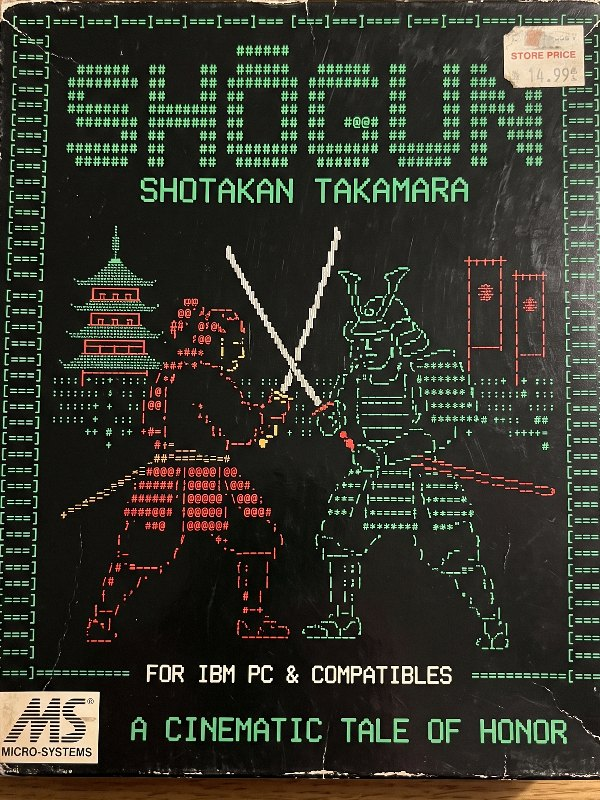
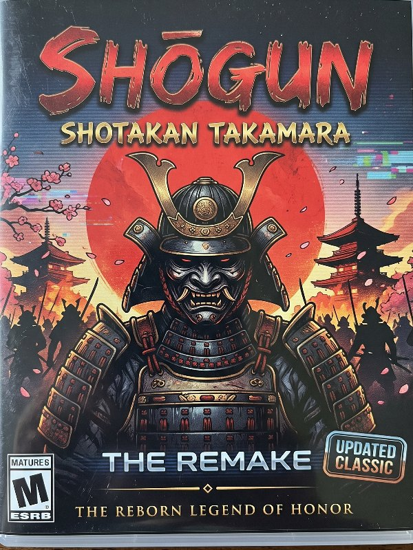
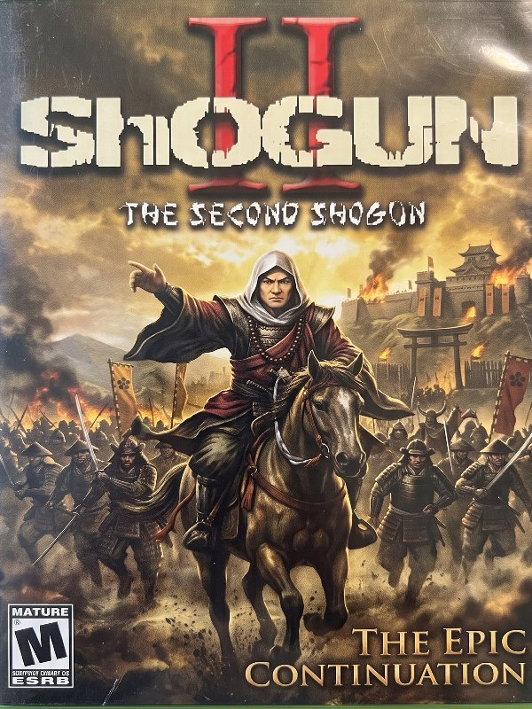

This browser can't go full screen from a page. On iPhone, tap Share, then Add to Home Screen, and open Shogun from there.
Three Shogun fighting games, 1996 to 2026, playable in your browser.

The original, running its real QBasic source. Text-mode art, PC-speaker music and the first FINISH HIM codes.

The 1996 game rebuilt for real-time fights. Same ladder of Wan'fu, Yamana and Frill, with fatality codes on screen.

The unfinished sequel, brought back to life. Filmed Keero and Corbin sprites, the full Shogun cast and the original title song.